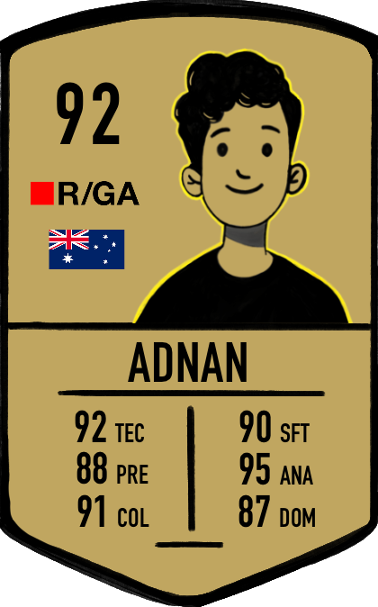

Ex-electronics engineer, ex-amateur footballer, now reading data the way a coach reads a match — patterns first, story second.
Webby Awards' 30 Most Iconic Companies in Internet History
Largest hearing aid retailer
One of the largest POD platforms
Largest telecom company in India
One of the top digital agencies in India
Deployed a sentiment analysis project on Heroku with a UI that takes user input on a particular term and fetches tweets regarding that term. Output is classified as positive, negative and neutral.
Watch live →Full-stack AI research tool that analyzes top YouTube videos for a search query — pulling transcripts and comments, then using Gemini 2.5 Flash to surface sentiment, themes and brand insights. Serverless Python backend on Modal, plus a live Q&A layer over the dataset.
Watch live →Comprehensive program covering Python, SQL, Power BI, Statistics, and Machine Learning.
Dayanand Sagar College of Engineering, Bangalore, India.